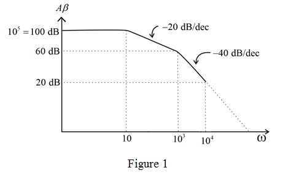
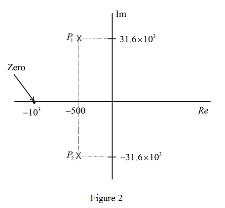
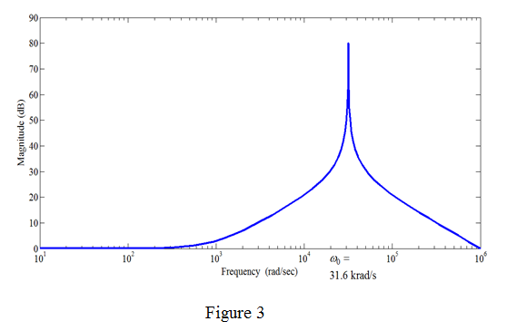

(a)
Refer to the Figure P10.100 in the text book.
Determine the value of feedback factor.
Substitute  for C and for
for C and for .
.
(a)
Refer to the Figure P10.100 in the text book.
Determine the value of feedback factor.
Substitute for C and for.
Since the open-loop gain, and a single-pole roll off with , the loop gain is,
, the loop gain is,
Draw the bode plot as shown in Figure 1.

(b)
From Figure 1, it is clear that,
Hence,
at half the decade from. That is, at.
Therefore, the phase margin is.
(c)
The closed loop transfer function is,
Further simplification yields,
Therefore, the closed loop gain is.
From the above transfer function, the poles are at
Here,
Draw the pole zero plot as shown in Figure 2.

The sketch of magnitude of transfer function versus frequency is shown in Figure 3.
